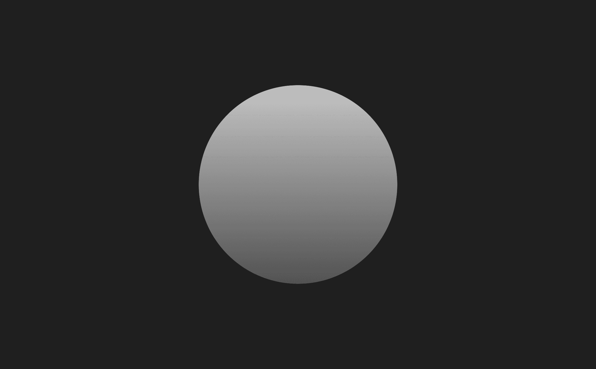

Mithvaer is a long-term worldbuilding project focused on creating a universe wherein my Oeuvre can exist.
I have a separate wiki dedicated to the lore of Mithvaer which you can find here.
| 12 Jun 2017–11 Nov 2018 | 47 logs | 52.43 h |
| Research | 30.93 h | |
| Visual | 18.55 h | |
| Audio | 1.56 h | |
| Development | 1.40 h |